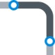
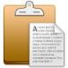

Chapter Review
In this chapter we introduced several modeling techniques which were used in the construction of a model. Before continuing, please review the following concepts, which were introduced in this chapter.
- Piping Codes: Each model in AutoPIPE must be associated with a specific Piping Code. AutoPIPE will automatically generate component and material options during operation of the program based on the selected piping code. The code is also used in code compliance calculations.
- Pipe Properties: Every object placed in a model is associated with a particular set of pipe properties. These properties are initially defined during the creation of a new system, but can be modified at any point during the design process.
-  Bend Placement: Bends require a unique placement procedure. First, the user specifies a tangent intersection point (TIP). This is the location where two perpendicular pipe runs would intersect, and does not indicate an actual physical point on the bend itself. After the TIP is specified, the user must specify the location of the next component or point. The downstream/next point helps to orient the elbow in three-dimensional space.
.png) Flange Insertion: Flanges may be inserted
on both sides of a component (i.e., a valve) with a single command.
Highlight the desired component, then select Insert > Piping
Components > Flange. After completing the dialog, flanges will
be placed on both sides of the selected component.
Flange Insertion: Flanges may be inserted
on both sides of a component (i.e., a valve) with a single command.
Highlight the desired component, then select Insert > Piping
Components > Flange. After completing the dialog, flanges will
be placed on both sides of the selected component.
- Tee Insertion: Like elbows, tees rely on the placement of a connecting component in order to orient it properly. Before the branch can be oriented, a run point or component must be routed off the branch end of the tee. To route off a tee branch, select the arrow graphic associated with the tee, then select the desired point or component placement command.
- Zoom Controls: AutoPIPE provides a variety of commands for controlling the display of the model. The Zoom controls are available in the View tab, and on a special set of toolbar buttons. A zoom control panel appears on the bottom of the application window, and the model is displayed as a wireframe. Use the commands in the menu or toolbar, or interactively pan, zoom, and rotate the model using the keyboard commands listed on the control bar.
Converting a Point: Intersecting points on pipe runs can be converted to a bend or a tee. The process is to first route the pipe runs, then select the intersection point and execute the appropriate Modify > Convert Point To command. Existing points can also be converted to run points using the Modify > Convert Point To > Run command.
-
.png) Intermediate
Points: Points can be added along an existing pipe run.
The process is to first select a starting point, then select Insert
> Piping Components > Run. When the Run Point dialog appears,
specify the desired quantity of intermediate points in the Generate
Points field. By default, the new point(s) will be equally spaced
between the active point and the next downstream point.
Intermediate
Points: Points can be added along an existing pipe run.
The process is to first select a starting point, then select Insert
> Piping Components > Run. When the Run Point dialog appears,
specify the desired quantity of intermediate points in the Generate
Points field. By default, the new point(s) will be equally spaced
between the active point and the next downstream point.
.png) Renumbering
Points: When inserting new points along an existing run,
the point names will no
Renumbering
Points: When inserting new points along an existing run,
the point names will no
longer be numbered sequentially along the segment (assuming the default naming scheme was utilized). To correct this, use the Home > Operations > Renumber commands.
-  Copy/Pasting a Range: Ranges of components can be copied and pasted to facilitate the modeling process. First select the range, then select Home > Clipboard > Copy. The selected range is copied to the Windows clipboard. You can now select a point in the model and paste the copied elements to a new location. AutoPIPE will automatically assign unique point names to
the copied component set.
- Moving/Stretching: AutoPIPE allows you to easily re-position components in the model. Select the range, then select Home > Operations > Move/Stretch. Input the new coordinates in the dialog. The cutlengths of components attached to the re-positioned range will be updated automatically and all connections will remain intact.